Попробуйте, наконец, Celesta
в своём проекте!
Everything should be made as simple as possible, but not simpler — attributed to Albert Einstein |
 | Иван Пономарёв
|
На дворе 2023й год…
Нам всё ещё нужно приложение на Java/Kotlin, работающее с реляционной базой
Что мы выберем?
Connectivity
JDBC API + DataSource
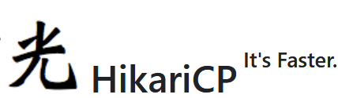
RDBMS
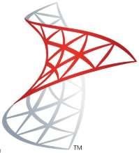 | 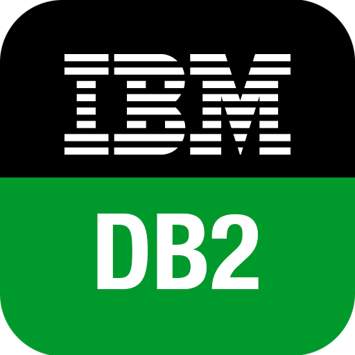 | |
| ||
|


Мигратор
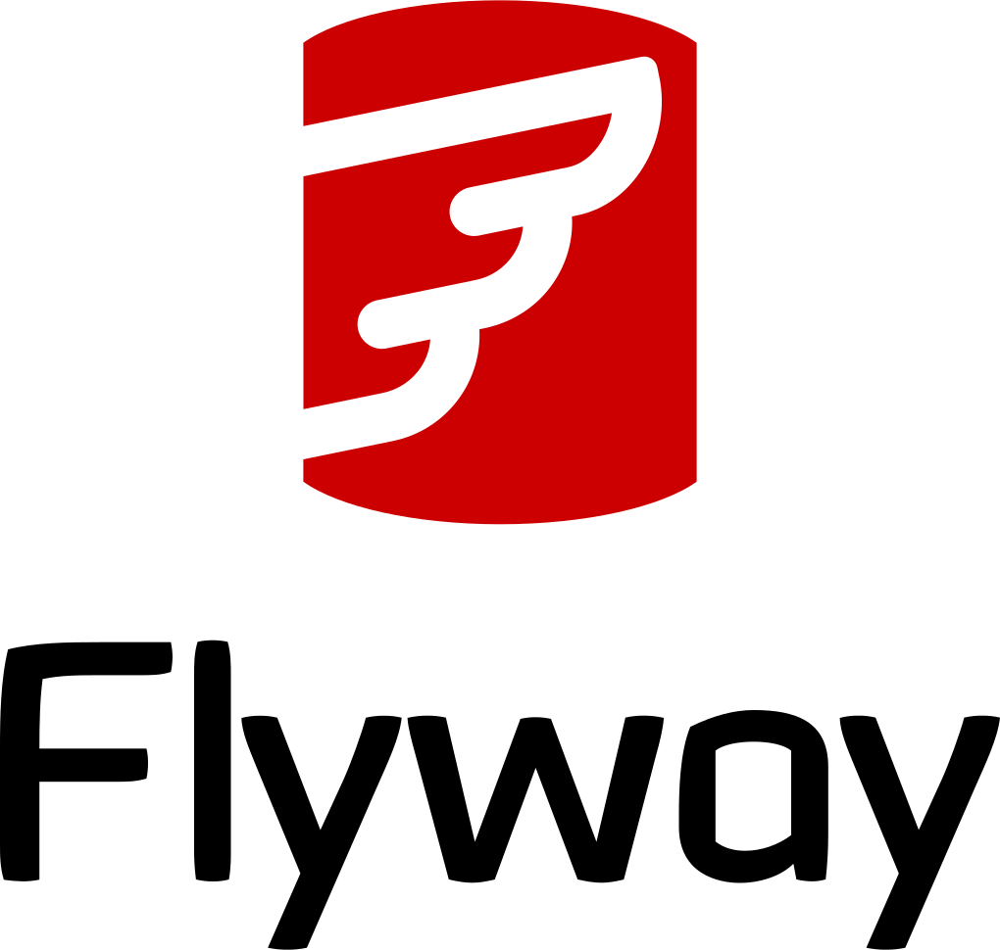 |
ORM
| 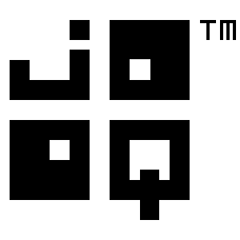 |
| 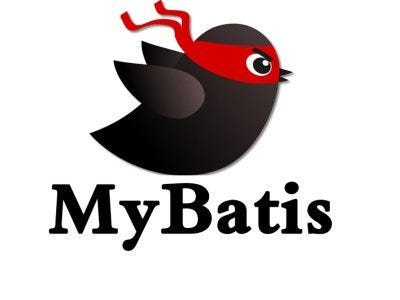 |


Тестирование
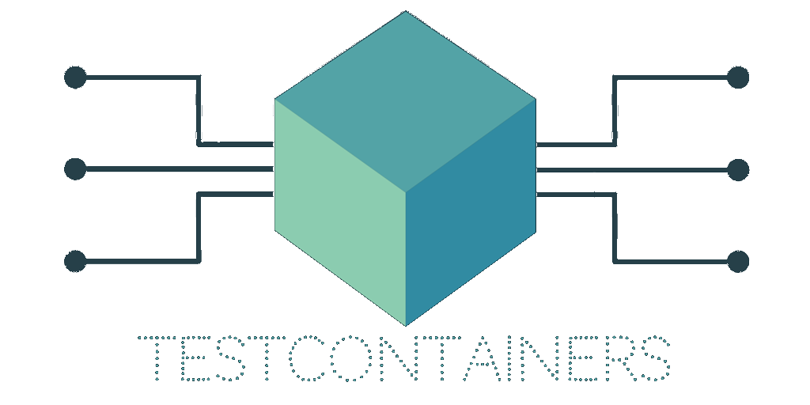 |
|
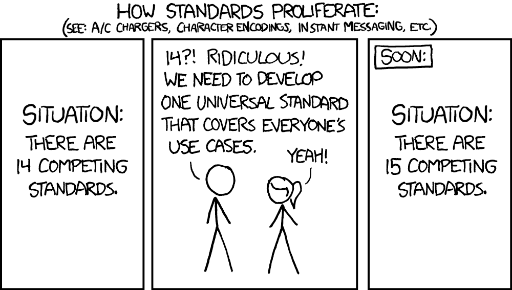
Meet Celesta
 |
|
Что такое Celesta?
|
|
Проблемы проекта Celesta
|
|

Celesta
Абстракция над 5 типами баз данных. Код не изменяется при замене базы данных!
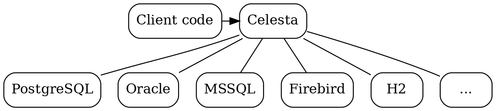
Comparison testing
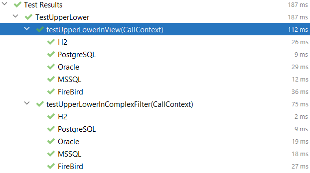
CelestaSQL: "virtual" SQL dialect
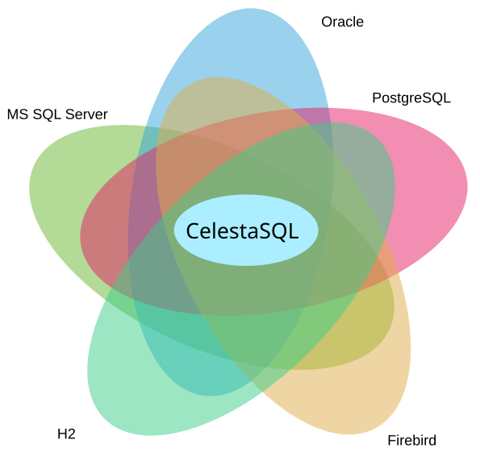
Type mapping
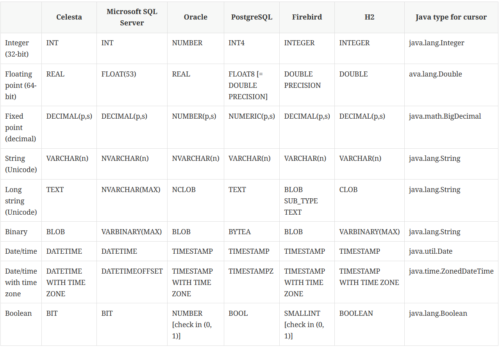
FAQ: Как же мой супер-производительный запрос, использующий специфичную функциональность конкретной СУБД?
А может обойтись функциональностью CelestaSQL?
Всегда можно просверлить дырку в абстракции (заплатив цену)
Внезапная выгода от database agnostic подхода
То, что работает на H2, будет работать и на
PostgreSQL
Oracle
MSSQL
Firebird
Проблемы с традиционными миграторами
<?xml version="1.0" encoding="UTF-8"?>
<databaseChangeLog>
<changeSet>
....
</changeSet>
<changeSet>
....
</changeSet>
<changeSet>
....
</changeSet>
</databaseChangeLog>Какова актуальная схема базы данных? — без дополнительных решений не разберёшься!
Это как если бы….
class Employee {
...
}
alter class Employee add variable String name;
alter class Employee drop method promote();
alter class add method doSomething(…) {
…
}Не лучше ли
CONVERGE TABLE OrderHeader(
id VARCHAR(30) NOT NULL,
date DATETIME DEFAULT GETDATE(),
customer_id VARCHAR(30),
customer_name VARCHAR(100),
CONSTRAINT Pk_OrderHeader PRIMARY KEY (id)
);чтобы скрипт выглядел привычно для SQL редакторов, используем
CREATEвместоCONVERGE
Как работает миграция Celesta
Сравнение актуального и желательного
Best effort для приведения актуального к желательному (топологическая сортировка, правильный порядок операций и т.д.)
Если у схемы задана версия через
CREATE SCHEMA foo VERSION '1.0';то миграция не производится к схеме более старой версии.
FAQ: Но ведь это работает не всегда?
Да, в аспекте исключительно автомиграции дела обстоят несколько хуже
На практике, при адекватном подходе, вы не этого не почувствуете (готов обсудить отдельно)
Всегда можно обойти абстракцию и приспособить Flyway (заплатив цену)
Курсоры
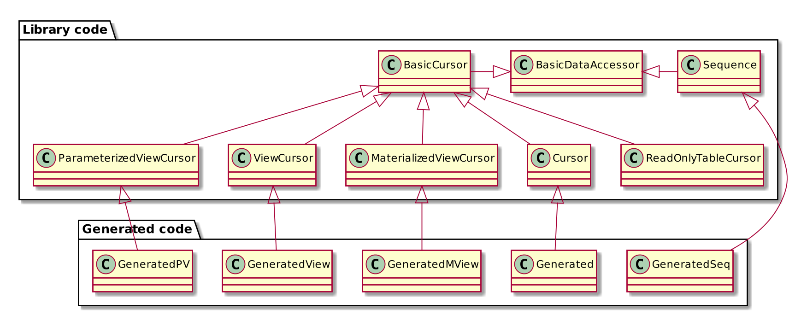
Как работает курсор: чтение по первичному ключу
CallContext ctx = ...
ItemCursor item = new ItemCursor(ctx);
//Type safe API!
item.get(42);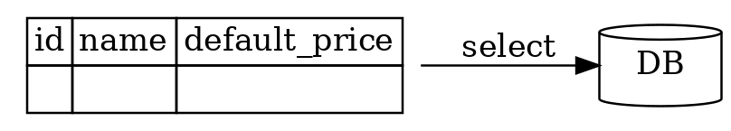
select id, name, default_price from item where id = 42 limit 1;Как работает курсор: чтение по первичному ключу
CallContext ctx = ...
ItemCursor item = new ItemCursor(ctx);
//Type safe API!
item.get(42);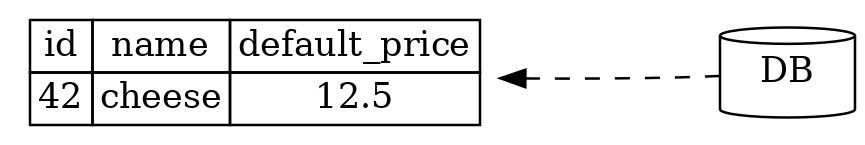
select id, name, default_price from item where id = 42 limit 1;Как работает курсор: модификация данных
//Type-safe, camelCase API
item.setDefaultPrice(14.9); //<---
item.update();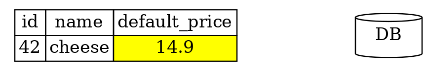
Как работает курсор: модификация данных
//Type-safe, camelCase API
item.setDefaultPrice(14.9);
item.update(); //<---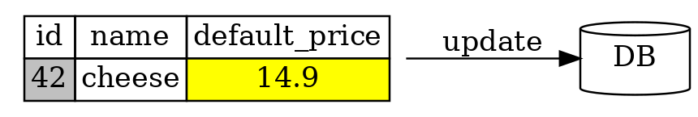
update item set default_price=14.9 where id = 42;Как работает курсор: модификация данных
//Type-safe, camelCase API
item.setDefaultPrice(14.9);
item.update();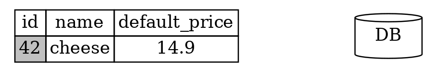
Как работает курсор: удаление
item.setId(43).delete();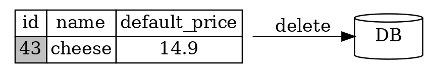
delete from item where id = 43;Как работает курсор: вставка с возвратом полей, вычисляемых базой данных
item.setName("cheese").insert();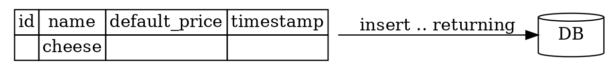
Как работает курсор: вставка с возвратом полей, вычисляемых базой данных
item.insert();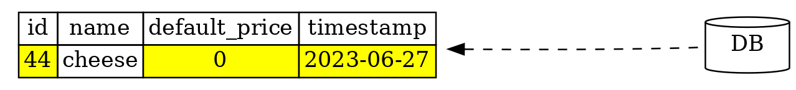
Как работает курсор: чтение фильтрованной выборки
//Не происходит запроса к БД, просто конфигурируем курсор
cursor.setRange(cursor.COLUMNS.foo(), value)
//SELECT ... WHERE foo = value
for (MyCursor rec: cursor) {
....
}Защита от потерянных обновлений
| |
Каждая таблица содержит поле
recversionКаждая таблица имеет UPDATE-триггер, проверяющий версию прочитанных данных и инкрементирующий
recversion.Отключаемо при помощи
WITH NO VERSION CHECK
"Проблема N+1"
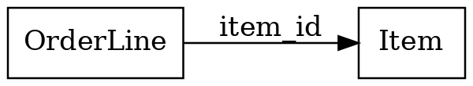
OrderLineCursor line = new OrderLineCursor(ctx);
ItemCursor item = new ItemCursor(ctx);
for (var l: line) {
item.get(l.getItemId());
/* достаем данные в каждой итерации :-( */
}"Проблема N+1": чуть лучше
OrderLineCursor line = new OrderLineCursor(ctx);
ItemCursor item = new ItemCursor(ctx);
for (var l: line) {
/* Objects.equals защищает от NPE */
if (!Objects.equals(item.getId(), l.getItemId()))
/* меньше обращений к базе */
item.get(l.getItemId());
}"Проблема N+1": оптимальный вариант
OrderLineCursor line = new OrderLineCursor(ctx);
ItemCursor item = new ItemCursor(ctx);
// Сортируем по join колонке
line.orderBy(line.COLUMNS.itemId());
for (var l: line) {
/* Objects.equals защищает от NPE */
if (!Objects.equals(item.getId(), l.getItemId()))
/* меньше обращений к базе */
item.get(l.getItemId());
}Проблемы N+1 может и не быть :-)
create view item_view as
select
i.id as id,
i.name as name,
o.ordered_quantity as ordered_quantity,
o.ordered_amount as ordered_amount
from item as i left join item_orders as o on i.id = o.item_id;ItemViewCursorсодержит все нужные поля
Проблема чтения лишних полей
RecCursor rec = new RecCursor(context);
rec.get(42)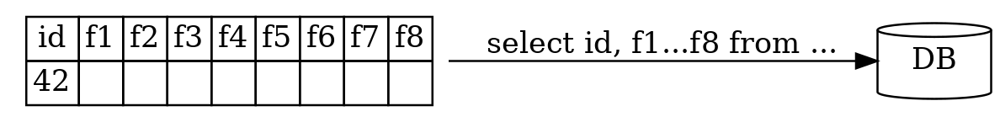
Проблема чтения лишних полей
RecCursor.Columns columns = new RecCursor.Columns(celesta);
RecCursor rec = new RecCursor(context, columns.f1(), columns.f3());
rec.get(42)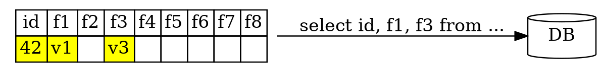
Как работает транзакция
CallContext— короткоживущий объект, несущий информацию о связи с базой данных, текущей транзакции и всех ресурсах, задействованных в текущей транзакции
@CelestaTransaction
public OrderDTO postOrder(CallContext ctx, OrderDTO orderDTO) {
//каждому курсору нужен контекст
OrderCursor orderCursor = new OrderCursor(ctx);
//делаем что-то с базой
....
}В это время снаружи транзакции…
try {
ctx.activate(celesta, ....);
Object result = joinPoint.proceed(); //<--
ctx.commit();
return result;
} catch (Throwable e) {
ctx.rollback();
throw e;
} finally {
ctx.close();
}Пример: схема данных
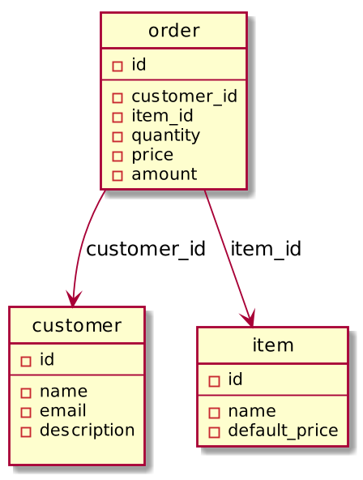
Пример: Архитектура
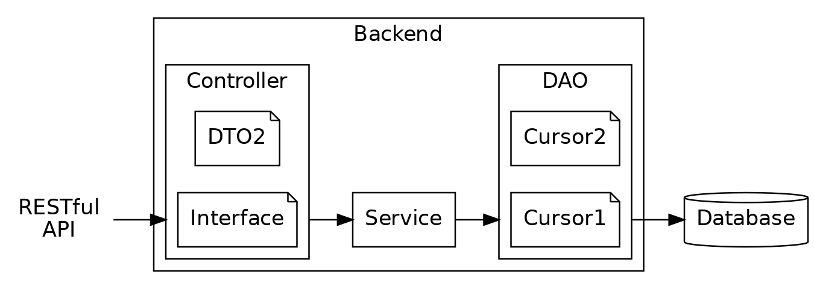
Пример: Архитектура
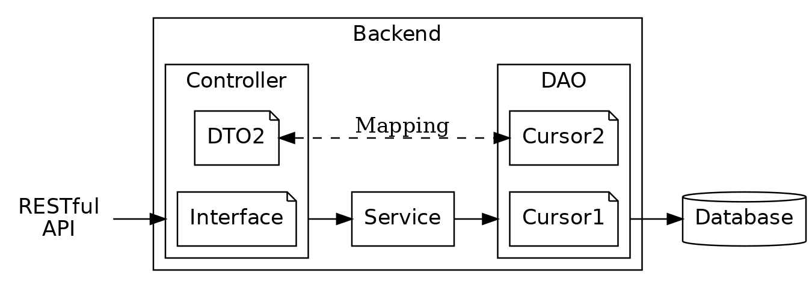
Выводы
Database-first разработка
Фокус только на бизнес-логику и её тестирование
Быстрые и простые тесты, как Unit, так и E2E
Спасибо за внимание!
Понравилось? Поставьте звезду!
Помогите советом
Попробуйте уже, наконец!
@inponomarev